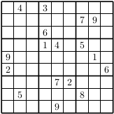

8. Using SAT Solvers¶
A satisfiability (SAT) solver determines whether a propositional formula has a satisfying assignment. The performance of SAT solvers has improved significantly in the last two decades. In the late 1990s, only formulas with thousands of variables and thousands of clauses could be solved. Today, many propositional formulas with millions of variables and millions of clauses can be solved. In this chapter, we will explain how to use SAT solvers and how to encode problems into propositional logic.
8.1. First examples¶
Remember that contemporary SAT solvers determine that satisfiability of propositional formulas in conjunctive normal form. Specifically, they use a format for specifying such formulas known as the DIMACS format. Our LAMR library proves a function that converts any CNF formula to that format, sends it to a SAT solver called CaDiCaL, and parses the answer. The following can be found in Examples/using_sat_solver/examples.lean:
def cadicalExample : IO Unit := do
let (s, result) ← callCadical exCnf0
IO.println "Output from CaDiCaL :\n"
--IO.println s
--IO.println "\n\n"
IO.println (formatResult result)
pure ()
#eval cadicalExample
It uses the same example CNF formulas defined in Section 5.3. You can change exCnf0 to exCnf1 or exCnf2, or use any other CNF formula you want. If you uncomment the two lines that begin IO.println, the Lean output will show you the raw output from CaDiCaL.
8.2. Encoding problems¶
All NP-complete problems can be transformed in polynomial time into a SAT problem (i.e., into a propositional formula). For many problems, such a transformation is quite natural. For some other problems, the transformation can be complicated. The transformation is not unique. Frequently there exist many way to encode a problem as a propositional formula. The encoding can have a big impact on the runtime of SAT solvers. Generally, the smallest encoding for a problem (in terms of the number of variables and the number of clauses) results in relatively strong performance. In this section we will describe a few encodings.
One way to encode a problem into propositional logic is to describe it first using some high-level constraints. Let’s consider a couple of high-level constraints: Constrain a sequence of literals such that at least one of them is true (atLeastOne), or that at most one of the is true (atMostOne), or that an odd number of them is true (XOR). Afterwards these constraints are encoded into propositional logical to obtain, so a SAT solver can be used to solve the resulting formula.
How to encode atLeastOne, atMostOne, and XOR as a set of clauses? The constraint atLeastOne is easy: simply use the disjunction of all the literals in the sequence. The second constraint is requires multiple clauses. The naive way generates a quadratic number of clauses: for each pair of literals \((l_i, l_j)\) in the sequence, include the clause \(\lnot l_i \lor \lnot l_j\). The naive way of encoding the XOR constraint results in an exponential number of clauses: all possible clauses over the literals such that an odd number of them are negated. For example, the encoding of XOR\((l_1,l_2,l_3)\) produces the following clauses: \(l_1 \lor l_2 \lor \lnot l_3, l_1 \lor \lnot l_2 \lor l_3, \lnot l_1 \lor l_2 \lor l_3, \lnot l_1 \lor \lnot l_2 \lor \lnot l_3\)
Although a quadratic number of clauses produced by can be acceptable atMostOne for a reasonable small sequence of literals, the exponential number of clauses produced by XOR would result in formulas that are hard to solve solely due to the size of the formula. Fortunately, one can encode both atMostOne and XOR using a linear number of clauses using the following trick: In case the sequence consists of more than four literals, split the constraint into two such that the first uses the first three literals of the sequence appended by a new literal \(y\), while the second uses the remainder of the sequence appended by the literal \(\lnot y\). For example, atMostOne\((l_1,\dots,l_n)\) is split into atMostOne\((l_1,l_2,l_3,y)\) and atMostOne\((l_4,\dots, l_n,\lnot y)\). The splitting is repeated until none of the constraints has a sequence longer than four.
Another approach to encode a problem into propositional logic is to express it first as another NP-complete problem and afterwards transform the result into propositional logic. Let’s demonstrate this approach for graph coloring. The graph coloring problem asks whether a given graph can be colored with a given number of colors such that adjacent vertices have different colors. Graph coloring problems can be easily encoded into a propositional formula, and SAT solvers can frequently solve these formulas efficiently.
Given a graph \(G=(V,E)\) and \(k\) colors, the encoding uses \(k|V|\) Boolean variables \(x_{i,j}\) with \(i \in \{1,\dots,|V|\}\) and \(j \in \{1,\dots,k\}\) and \(|V| +k|E|\) clauses. If \(x_{i,j}\) is assigned to true it means that vertex \(i\) is assigned color \(j\). The clauses encode two constraints: each vertex has a color and adjacent vertices have a different color. The first constraint can be encoded using a single clause per vertex. For example, for vertex \(i\), we have the following clause: \(x_{i,1} \lor \dots \lor x_{i,k}\). The second constraint requires \(k\) binary clauses. For example, for an edge between vertices \(h\) and \(i\), we have the following binary clauses: \((\lnot x_{h,1} \lor \lnot x_{i,1}) \land \dots \land (\lnot x_{h,k} \lor \lnot x_{i,k})\).
The CNF formulas for a triangle (a fully connected graph with three vertices) for two colors and three colors is shown below. The first one is unsatisfiable, while the second one is satisfiable.
def triangleCnf2 := !cnf{
x11 x12,
x21 x22,
x31 x32,
-x11 -x21, -x12 -x22,
-x11 -x31, -x12 -x32,
-x21 -x31, -x22 -x32
}
def triangleCnf3 := !cnf{
x11 x12 x13,
x21 x22 x23,
x31 x32 x33,
-x11 -x21, -x12 -x22, -x13 -x23,
-x11 -x31, -x12 -x32, -x13 -x33,
-x21 -x31, -x22 -x32, -x23 -x23
}
Many problems, such as scheduling and planning, can naturally be expressed as a graph coloring problem. We can then transform the graph coloring problem into a SAT problem using the encoding described above.
An example of a problem that can be expressed as a graph coloring problem is the popular puzzle Sudoku: Place number is a grid consisting of nine squares subdivided into a further nine smaller squares in such a way that every number appears once in each horizontal line, vertical line, and square. This puzzle can be seen as a graph coloring where each small square is a vertex, and vertices are connected if and only if the corresponding small squares occur the the same horizontal line, vertical line, or square. Below is one of the hardest sudoko puzzles with only 17 given numbers. It can be easily solved using a SAT solver.
{kind=link}
8.3. Exercise: grid coloring¶
Ramsey Theory deals with patterns that cannot be avoided indefinitely. In this exercise we focus on a pattern of coloring a \(n \times m\) grid with \(k\) colors: Consider all possible rectangles within the grid whose length and width are at least 2. Try to color the grid using \(k\) colors so that no such rectangle has the same color for its four corners. When this is possible, we say that the \(n \times m\) grid is \(k\)-colorable while avoiding monochromatic rectangles. When using \(k\) colors, it is relatively easy to construct a valid \(k^2 \times k^2\) grid. However, only few valid grids that are larger than \(k^2 \times k^2\) are known. An example of a valid \(3\)-coloring of the \(9 \times 9\) grid is shown below.
0 0 1 1 2 2 0 1 2
2 0 0 1 1 2 2 0 1
1 2 0 0 1 1 2 2 0
0 1 2 0 0 1 1 2 2
2 0 1 2 0 0 1 1 2
2 2 0 1 2 0 0 1 1
1 2 2 0 1 2 0 0 1
1 1 2 2 0 1 2 0 0
0 1 1 2 2 0 1 2 0
Step 1. Encode whether there exists a coloring of the grid using three colors so that no such rectangle has the same color for its four corners. The encoding requires two types of constraints. First, each square needs to have at least one color. Second, if four squares form the corners of a rectangle, then they cannot have the same color.
Step 2. Solve the encoding for a \(10 \times 10\) grid using a SAT solver and decode the solution into a valid coloring. Show the output of the SAT solver and a valid 3-coloring similar to the one above of the \(9 \times 9\) grid.
Note that any valid coloring can be turned into another valid coloring by permuting the rows, columns, or colors. However, such valid colorings are isomorphic.
Step 3. Use the tool Shatter to (partially) break the symmetries of the encoding in Step 1 and count the number of solutions of the resulting formula.
8.4. Exercise: NumberMind¶
The game Number Mind is a variant of the well known game Master Mind.
Instead of colored pegs, you have to guess a secret sequence of digits. After each guess you’re only told in how many places you’ve guessed the correct digit. So, if the sequence was 1234 and you guessed 2036, you’d be told that you have one correct digit; however, you would NOT be told that you also have another digit in the wrong place.
For instance, given the following guesses for a 5-digit secret sequence,
90342 ;2 correct
70794 ;0 correct
39458 ;2 correct
34109 ;1 correct
51545 ;2 correct
12531 ;1 correct
The correct sequence 39542 is unique.
Based on the following guesses,
5616185650518293 ;2 correct
3847439647293047 ;1 correct
5855462940810587 ;3 correct
9742855507068353 ;3 correct
4296849643607543 ;3 correct
3174248439465858 ;1 correct
4513559094146117 ;2 correct
7890971548908067 ;3 correct
8157356344118483 ;1 correct
2615250744386899 ;2 correct
8690095851526254 ;3 correct
6375711915077050 ;1 correct
6913859173121360 ;1 correct
6442889055042768 ;2 correct
2321386104303845 ;0 correct
2326509471271448 ;2 correct
5251583379644322 ;2 correct
1748270476758276 ;3 correct
4895722652190306 ;1 correct
3041631117224635 ;3 correct
1841236454324589 ;3 correct
2659862637316867 ;2 correct
Find the unique 16-digit secret sequence.
Step 1. Encode finding the correct sequence as a SAT problem. Use Boolean variables \(x_{i,j}\) which are true if and only if at position i there is the digit j. The encoding consists of two parts: i) at each position there is exactly one digit; and ii) the correct number of digits from each line is matched. The encoding should only use these \(x_{i,j}\) variables.
Step 2. Show that the correct sequence is unique. Which clause do you need to add to the encoding of Step 1?
Step 3. Reduce the size of the encoding by replacing the cardinality constraints from ii) in Step 1 by using the Sinz encoding.